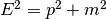
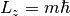
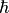
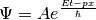
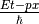
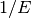
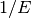
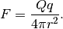
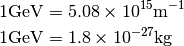

Common Sense¶
Units¶
Natural units makes the calculation of neutrinos convinient. The consequences are
- The energy-mass-momentum relations becomes . Thus mass
 , momentum and energy
, momentum and energy  have the same units.
have the same units. - Angular momentum in quantum mechanics is  where is a number.  is of unit angular momentum.
- A plane wave in quantum mechanics is .  should be unitless, which means has unit angular momentum, which is obvious, while also has the unit of angular momentum. Previously we noticed momentum has the same unit with energy, we should have time
 has the same unit as length
has the same unit as length  . Also we can conclude that length and time has the unit of .
. Also we can conclude that length and time has the unit of .
One should notice that charge is unit 1 in natural units since

The conversion between natural units and SI can be down by using the following relations.

Diagrams¶

The meanings of points and lines in a ternary diagram. From File:Vol1 Page 380 Image 0001.png@PetroWiki
{kind=link}
In this documentation on neutrinos, we have all the readings of a point by looking into the line that goes to the left, which means that for the bottom axis, the left is 0 while the right is 1.